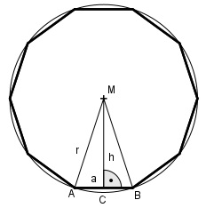

Aufgabe 214 Als Stützen für einen Vorbau sind regelmäßige Zehnecksäulen vorgesehen. Wie groß muss eine Seite a der Säule sein, wenn der Abstand der parallelen Seiten 45 cm sein muss?

a r = --- * (√5 + 1) siehe Aufgabe 208 2 45 cm h = -------- = 22,5 cm 2 Satz von Pythagoras im Dreieck ACM: a r2 = (---)2 + 22,52 2 a a2 (--- * (√5 + 1))2 = ---- + 22,52 2 4 a2 a2 --- * 3,242 = ---- + 506,25 |*4 4 4 a2 * 10,5 = a2 + 2025 |-a2 a2 * 10,5 – a2 = 2025 a2(10,5 – 1) = 2025 9,5a2 = 2025 | :9.5 a2 = 213,2 |√ a = 14,6 cm